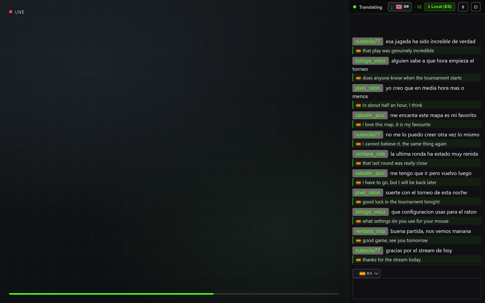
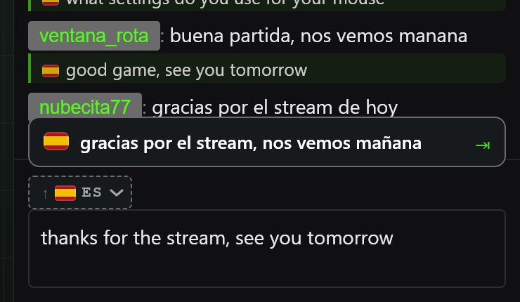
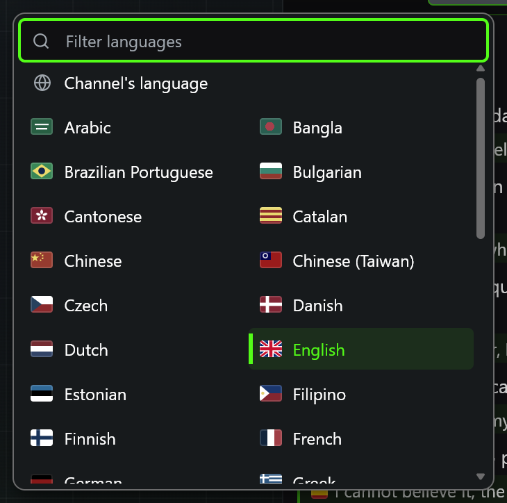

Kick Chat Translator lets anyone read and join any Kick chat in their own language. Since June, people in 58 countries on six continents have done exactly that.
It is a free browser extension. Every chat message gets its translation as it arrives, and a viewer's reply is shown in the channel's language before it is sent. I build it on my own, and it has grown every month since June.
This note gives the numbers behind three questions for Kick, on page 6. No account, nothing to set up, on Chrome, Brave, Edge and Firefox.
Figures from the Chrome Web Store developer dashboard, read 2 November 2026.

installs since the listing went live on 5 June 2026
weekly users on 1 November, up from 150 on 3 October
countries on six continents have installed or used it
languages, for the chat and for the extension's own interface
the version all 172 daily users run
The extension in its own test room, laid out like a Kick channel. Usernames and messages are invented.
Independent project, not affiliated with Kick.
This is what the extension is for: a viewer in Lima or Istanbul reading and joining a chat from Tokyo or Warsaw, each in their own language.
Every country lit on this page has installed it since June, or has users this week. The points are the 366 cities, in 70 countries, where people opened its store listing this year. 65% of this week's users are outside the US, and they browse in 21 languages.
Chrome Web Store dashboard CSV exports, read 2 November 2026. Number: installs since 5 June. China, the Netherlands and Nigeria have weekly users with no install recorded in the period.
Independent project, not affiliated with Kick.
A green bar above the chat says it is on. There is no account and nothing to set up.
The channel's language is read from Kick. Each message is translated under the original, live and in VODs, and a reply typed in the viewer's own language is previewed in the channel's.
With Chrome or Edge 138 and later, translation can run on the viewer's computer, and the text never leaves it.

1 2 3
1 2 3Captures from the extension's test room. Usernames and messages are invented.
June to October 2026, Chrome Web Store. Up every month since the listing went live on 5 June.
411 installs in the last 90 days, against 125 in the 90 days before. Weekly users went from 150 on 3 October to 212 on 1 November. The best day so far was 31 October, with 29 installs.
Developer dashboard and its CSV exports, read 2 November 2026.
| Language | users |
|---|---|
| English (US) | 65 |
| Japanese | 15 |
| Turkish | 14 |
| English (UK) | 12 |
| Russian | 10 |
| Spanish | 9 |
| Polish | 8 |
| Portuguese (Brazil) | 8 |
| 13 others, Korean to Hebrew | 21 |
+45%
listing views (289), from 1,163 impressions in the store.
ChatGPT recommends it more than any other site: 15 of the 28 listing views referred by another site came from chatgpt.com.
All 172 daily users run the current version, 3.3.0.
Independent project, not affiliated with Kick.
Viewers who use it read and write in the chat: about 7 translated replies a day each, in the channel's language.
The usage figures come from 16 users who opted in to an anonymous daily count, over 36 active days between 5 October and 1 November 2026. It never contains message text, usernames or channels.
Latency was measured on a live Kick channel for 29 minutes, from a message appearing to its translation on screen.
| Translations shown in the chat | about 3,400 |
| Of those, served from the local cache | about 24% |
| Reply previews shown | about 37 |
| Translated replies put in the chat box | about 7 |
| Days with the 7TV extension also running, emotes kept | 53% |
About 9% of the cloud wait is the extension itself: the cache lookup and writing into the chat take 0 ms, transport 3 ms. The rest is the translation provider. Messages go out in batches, and 821 requests met no rate limit.
Sources: opt-in daily statistics (GA4); instrumented build, live Kick channel.
If the name or the icon has to follow Kick's brand guidelines, I will change both store listings.
29 releases since 1 May 2026, 930 automated tests, a 446 KiB package, MIT licence, no server of its own.
[Your name]
Developer, Kick Chat Translator
Independent project, not affiliated with Kick.